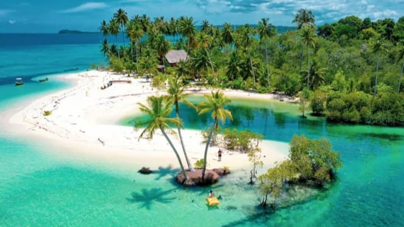

Pulau Mentawai
Pulau Mentawai merupakan gugusan kepulauan di lepas pantai barat Sumatera Barat yang terkenal dengan keindahan alamnya serta budaya tradisional suku Mentawai yang masih lestari. Terdiri dari pulau-pulau utama seperti Siberut, Sipora, Pagai Utara, dan Pagai Selatan, wilayah ini menawarkan pantai berpasir putih, laut jernih, serta ombak kelas dunia yang menjadikannya salah satu destinasi favorit peselancar internasional. Selain itu, hutan tropis yang lebat di Mentawai menjadi habitat berbagai satwa endemik seperti monyet Mentawai dan burung langka. Tidak hanya keindahan alamnya, budaya lokal juga menjadi daya tarik utama, di mana masyarakat Mentawai masih mempraktikkan kehidupan tradisional seperti membuat tato khas, berburu dengan panah beracun, dan tinggal di rumah adat “uma”. Akses ke Mentawai umumnya melalui jalur laut dari Kota Padang, dan meskipun perjalanan cukup menantang, pesona alam serta kekayaan budaya Mentawai menjadikannya destinasi yang layak untuk dijelajahi.
Kembali